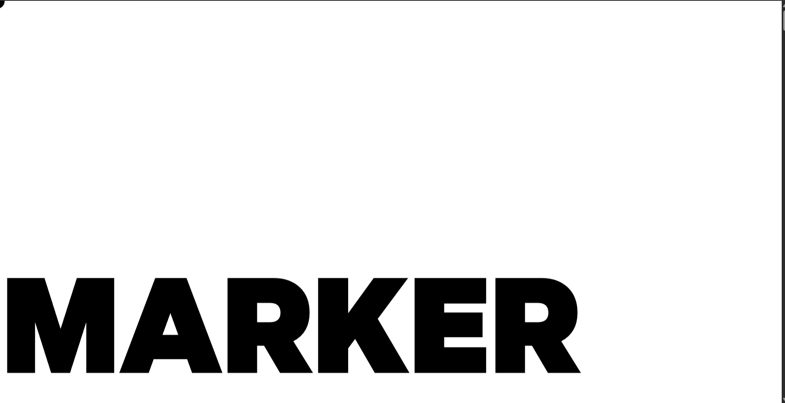
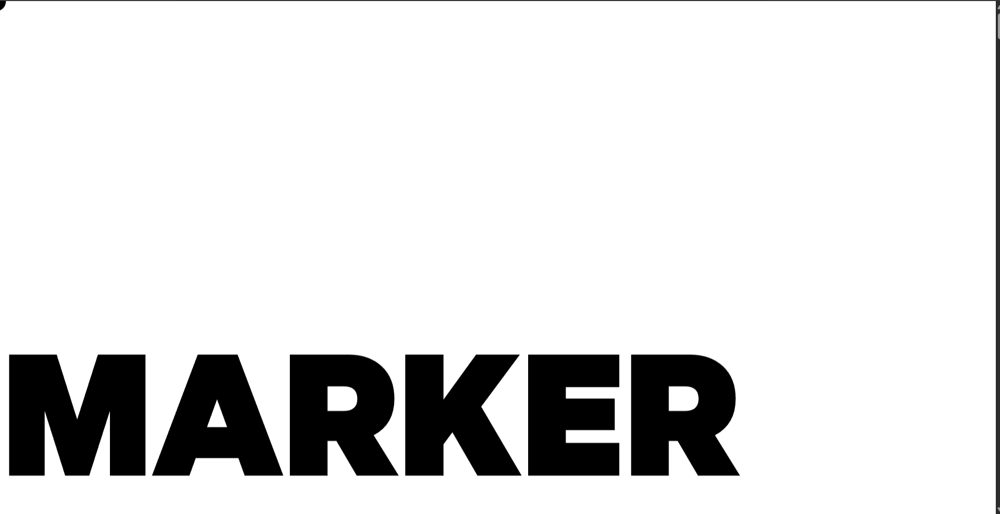

Origins
THE ARTIST was beginning to get very tired of using thin pencils on the draft, and of having no impact: once or twice she had dipped the brush into the ink pot her mentor was using, but it had no control or portability in it, “and what is the use of a tool,” thought the artist, “without boldness or permanence?”
She had dipped the brush into the ink pot her mentor was using, but it had no control or portability in it, “and what is the use of a tool,” thought the artist, “without boldness or permanence?”
Evolution
THE ARTIST was beginning to get very tired of using thin pencils on the draft, and of having no impact: once or twice she had dipped the brush into the ink pot her mentor was using, but it had no control or portability in it, “and what is the use of a tool,” thought the artist, “without boldness or permanence?”
A brush into the ink pot her mentor was using, but it had no control or portability in it, “and what is the use of a tool,” thought the artist, “without boldness or permanence?”